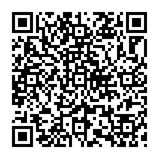

Вы приобретаете
Альфа-ПВП Кристалл Белый 0,5 гр "магнит"
Стоимость 2503 руб.
Город Москва
Район СВАО, м.МЦК Окружная
Для приобретения выбранного товара, оплатите 0.0014988 BTC на Bitcoin кошелек:
3CE4xxXqj2Q72XjxyyeGhuPDARCiMufaao

[ ↑ QR код для более удобной оплаты (если нужен) ]
Заказ #127771
Комментарий к платежу 147502
Это номер вашего заказа, запомните его. По номеру заказа и комментарию вы сможете узнать статус заказа (получить адрес) в любой момент и с любого устройства на странице проверка заказа
Комментарий служит исключительно для идентификации Вашего заказа. Отправлять BTC с комментарием не нужно, достаточно просто на указанный кошелек перевести точную сумму, дождаться 1 подтверждений в системе Bitcoin, после чего Вы получите свой адрес. Оплачивать необходимо одним переводом. Сумма перевода и кошелек должны быть точными, как указано в реквизитах выше, иначе Ваша оплата не засчитается. Будьте внимательны, так как при ошибочном платеже получить адрес или возврат средств будет невозможно! Выдача адреса производиться на этой странице автоматически, либо на странице проверка заказа по выданному номеру заказа и присвоенному комментарию. Если Вы случайно закрыли данную страницу, воспользуйтесь страницей проверка заказа. Создать свой кошелек Bitcoin можно здесь или здесь. Купить Bitcoin можно через обменники, например: здесь.